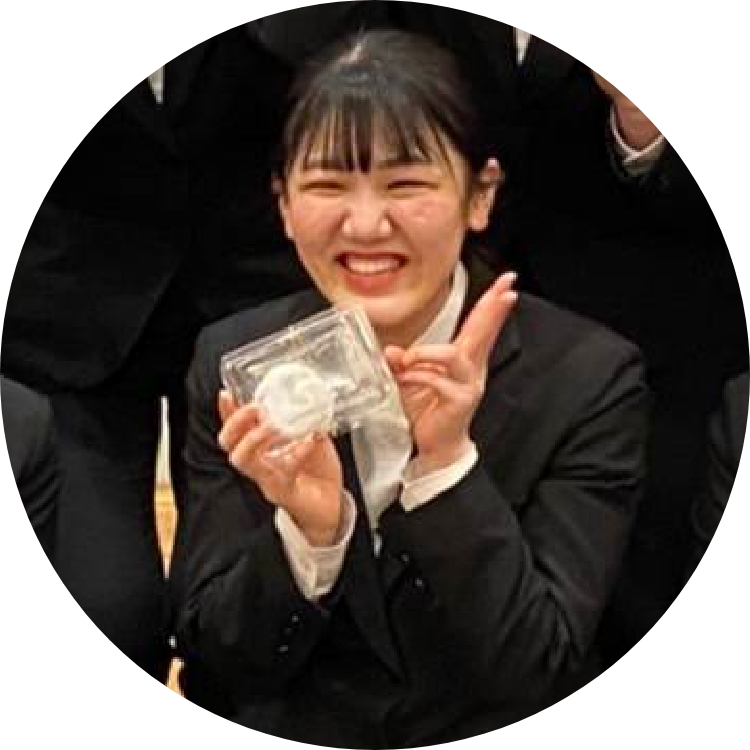
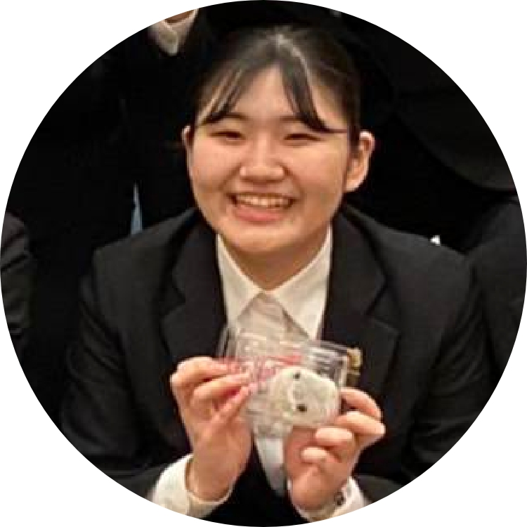

PEOPLE
一緒に働く人について知る
-

高校生Aさん
17 YEARS OLD
勇気を出して応募してよかった。
私は初めてのアルバイトで不安でしたが、勇気を出して応募しました。 事前に研修もらあり、サービスマナー等も学べ、実際に仕事を始めたら先輩スタッフも丁寧に教えてくれて、楽しく仕事できてます。 私は、高校卒業後に就職しるので、結婚式場でのアルバイトが卒業後に役立つと確信してます。
-
ブライダル専門学校生Bさん
20 YEARS OLD
将来の夢のイメージが膨らんだ。
将来、結婚式場でプランナーを目指して、ブライダル学校に入りました。学校の先生の進めで、ネオプライムでアルバイトを始めました。 実際の結婚式での経験がいっぱいできて、ますます将来の夢が膨らみました。
-
看護学校生Cさん
20 YEARS OLD
様々な面で素敵なアルバイト。
人のために役にたちたいとの思いで、看護師を目指して、看護学校に入りました。 アルバイトを探している時に、学校の先輩の紹介でネオプライムを紹介してもらいました。最初は不安いっぱいでしたが、ワクワクの方が多かったです。 慣れるまでは大変でしたが、一ヶ月を過ぎたあたりから、心にも余裕ができて、大変よりも楽しさのほうが上回ってます。 新郎新婦様、お客様の笑顔を見ていると、楽しくて仕方ありません。 看護学校なので実習も多く、実習中はアルバイトできませんが、シフトを上手に組んでくれて、アルバイトさせてもらってます。 全ての面で、素敵なアルバイトです。
-

ダブルワークDさん
35 YEARS OLD
本業では味わえない、刺激・感動がある。
土日休みの仕事してますが、月に二回くらいアルバイトしたく、ネオプライムに応募しました。面接でその旨を説明すると、月に二回でも大歓迎とのことでアルバイトスタートしました。 もう初めて10年くらいたちますが、今も月に平均二回ペースで頑張ってます。 本業では味わえない、刺激、感動があり、今でも楽しく働いてます。